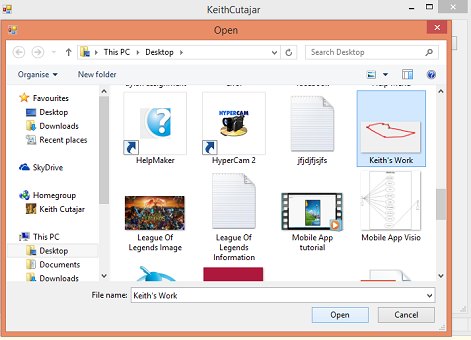
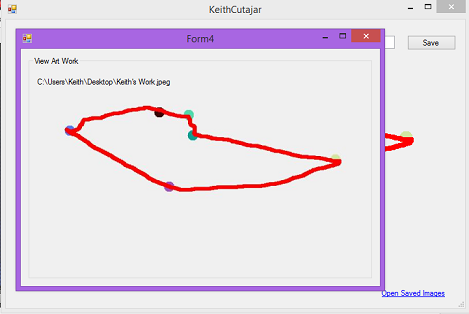
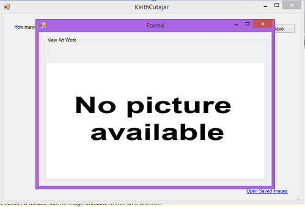

When one clicks on the link at the bottom right of the window, a window is popped-out so that the
user can choose the file location to load the image.

When the user clicks open, another window is popped with the picture chosen and its original
path written on top of it as shown below.

If the user presses cancel, a window with no image available written on it is shown.
